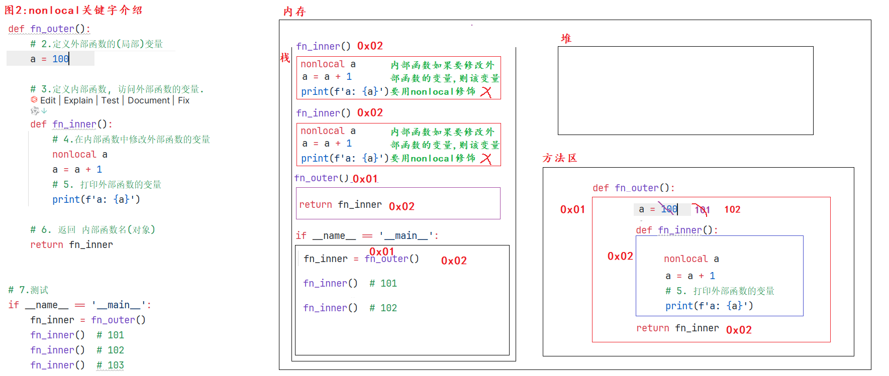

闭包背景介绍
Python
""" 案例: 闭包背景介绍 案例目的: 引出来 闭包 相关的知识点. """ # 需求: 定义函数保存变量10, 调用函数返回值 并 重复累加数值, 观察结果. # 1. 定义函数, 保存变量10 def func(): num = 10 return num # 2. 调用函数, 获取返回值. num = func() print(num + 1) # 11 print(num + 1) # 11 print(num + 1) # 11
闭包入门

Python
""" 案例: 闭包入门. 闭包解释: 概述: 内部函数 使用了外部函数的变量, 这种写法就称之为闭包. 格式: def 外部函数名(形参列表): 外部函数的(局部)变量 def 内部函数名(形参列表): 使用外部函数的变量 return 内部函数名 前提条件: 1. 有嵌套. 外部函数嵌套内部函数 2. 有引用. 内部函数使用外部函数的变量 3. 有返回. 外部函数中, 返回 内部函数名(对象) 细节: 1. 函数名 和 函数名() 是两个概念, 前者表示 函数对象, 后者表示 调用函数, 获取返回值. """ # 案例1: 函数名 -> 是对象 def get_sum(a, b): return a + b print(get_sum) # <function get_sum at 0x000001B4AC3DD800>, 对象. print(get_sum(10, 20)) # 调用函数, 获取返回值. # 函数名可以赋值给变量, 这个变量就是: 函数对象. my_sum = get_sum print(my_sum) # <function get_sum at 0x00000251CE53D800> print(my_sum(100, 200)) # 300 print('-' * 23) # 案例2: 演示闭包写法. # 需求: 定义求和的闭包, 外部函数有参数num1, 内部函数有参数num2, 调用, 求解两数之和, 观察结果. # 1. 定义外部函数. def fn_outer(num1): # 2. 定义内部函数 def fn_inner(num2): # 有嵌套 # 3. 求和 sum = num1 + num2 # 有引用 print(f'求和结果: {sum}') return fn_inner # 有返回 # 4.调用上述的函数 fn_inner = fn_outer(10) fn_inner(20) print('-' * 23) fn_outer(100)(200)
nonlocal关键字介绍
- 图解

- 代码
Python
""" 案例: nonlocal关键字介绍 nonlocal: 它是Python内置的关键字, 可以实现 在内部函数中 修改外部函数的 变量值. """ # 需求: 编写1个闭包,让内部函数访问外部函数的参数 a = 100, 并观察结果. # 1. 定义外部函数. def fn_outer(): # 2.定义外部函数的(局部)变量 a = 100 # 3.定义内部函数, 访问外部函数的变量. def fn_inner(): # 4.在内部函数中修改外部函数的变量 nonlocal a # nonlocal: 可以实现在内部函数中修改外部函数的变量值. a = a + 1 # 5. 打印外部函数的变量 print(f'a: {a}') # 6. 返回 内部函数名(对象) return fn_inner # 7.测试 if __name__ == '__main__': fn_inner = fn_outer() fn_inner() # 101 fn_inner() # 102 fn_inner() # 103
装饰器入门
- 图解

- 代码
Python
""" 案例: 装饰器入门. 装饰器介绍: 概述/作用: 它的本质是1个闭包函数, 目的是 在不改变原有函数的基础上, 对其功能做增强. 大白话: 装修队 在不改变房屋结构的情况下, 对房屋做装饰(功能增强) 前提条件: 1. 有嵌套. 2. 有引用. 3. 有返回. 4. 有额外功能. 装饰器的用法: 格式1: 传统写法. 装饰后的函数名 = 装饰器名(被装饰的原函数名) 装饰后的函数名() 格式2: 语法糖. 在要被装饰的原函数上, 直接写 @装饰器名, 之后直接调用原函数即可. """ # 需求: 在发表评论前, 都是需要先登录的. # 1.定义外部函数, 形参列表接收 要被装饰的函数名(对象) def check_login(fn_name): # fn_name: 被装饰的函数名(对象) # 1.1 定义内部函数. def fn_inner(): # 有嵌套 # 1.2 额外功能 print('校验登陆... 登陆成功!') # 1.3 访问原函数, 即: 外部函数的引用. fn_name() # 有引用 # 1.4 返回内部函数对象. return fn_inner # 有返回 # 2.定义函数, 表示 发表评论. def comment(): print("发表评论") @check_login # 底层其实是: payment = check_login(payment) def payment(): print('充值中...') # 3. 测试. # 3.1 传统方式. comment = check_login(comment) comment() print('-' * 23) # 3.2 语法糖 # payment = check_login(payment) # payment() payment()
装饰器案例
- 场景1: 无参无返回值的原函数

Python
""" 案例: 装饰器装饰_无参无返回的原函数 细节: 装饰器的内部函数格式 要和 被装饰的原函数 保持一致, 即: 原函数是无参无返回的, 则 装饰器的内部函数也必须是 无参无返回的. 原函数有参有返回的, 则 装饰器的内部函数也必须是 有参有返回的. """ # 需求: 定义无参无返回值的 get_sum()求和函数, 在不改变其代码的基础上, 添加友好提示: 正在努力计算中... # 1. 定义装饰器. def my_decorator(fn_name): # 1.1 定义内部函数, 其格式必须和 被装饰的原函数 保持一致. def fn_inner(): # 有嵌套 # 1.2 添加提示信息(额外功能) print('正在努力计算中...') # 有额外功能 # 1.3 调用原函数. fn_name() # 有引用 # 1.4 返回内部函数(对象) return fn_inner # 有返回 # 2. 定义原函数. @my_decorator def get_sum(): a = 10 b = 20 sum = a + b print(f'sum求和结果: {sum}') # 3.测试. # 3.1 传统方式. # get_sum = my_decorator(get_sum) # get_sum() # 3.2 语法糖. get_sum()
- 场景2: 有参无返回值的原函数
Python
""" 案例: 装饰器装饰_有参无返回的原函数 细节: 装饰器的内部函数格式 要和 被装饰的原函数 保持一致, 即: 原函数是无参无返回的, 则 装饰器的内部函数也必须是 无参无返回的. 原函数有参有返回的, 则 装饰器的内部函数也必须是 有参有返回的. """ # 需求: 定义有参无返回值的 get_sum()求和函数, 在不改变其代码的基础上, 添加友好提示: 正在努力计算中... # 1. 定义装饰器. def my_decorator(fn_name): # 1.1 定义内部函数 def fn_inner(x, y): # 1.2 额外功能 print('正在努力计算中...') # 1.3 调用原函数. fn_name(x, y) # 1.4 返回内部函数. return fn_inner # 2. 定义原函数, 有参无返回值. @my_decorator def get_sum(a, b): sum = a + b print(f'sum求和结果: {sum}') # 3.测试. # 3.1 传统方式. # get_sum = my_decorator(get_sum) # get_sum(10, 20) # 3.2 语法糖. get_sum(10, 20)